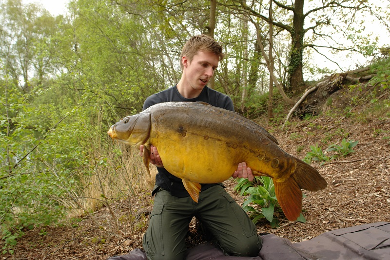
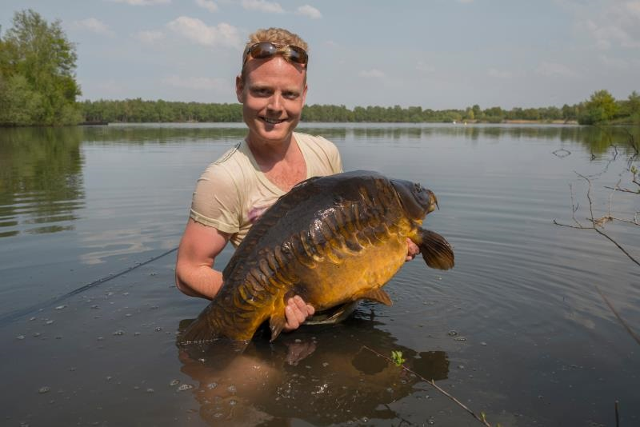
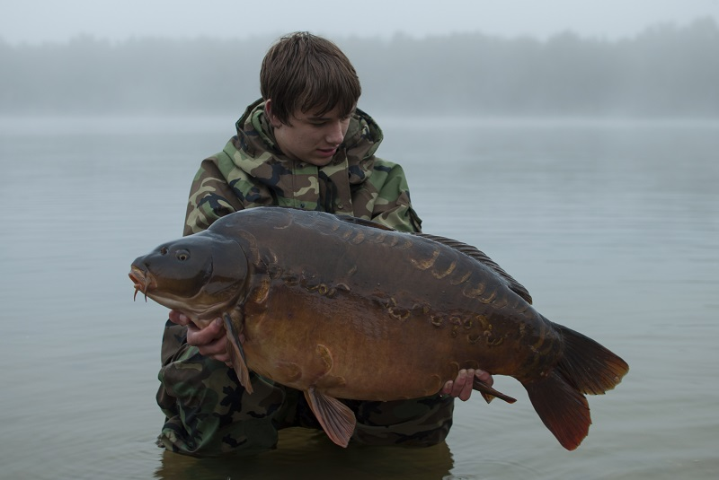

Hengelsport
Het water van De Meeren leent zich uitstekend voor zowel karpervissen als witvissen. Het meer biedt een uitdagende en gevarieerde visomgeving voor zowel beginners (witvis) als gevorderde vissers (karper).
Mooie spiegels met prachtige schubbenpatronen, sterke schubkarpers en een verdwaalde ghostkarper. Het bestand is uitstekend: gemiddeld 10 kilo, toplaag boven de 20 kilo, en vissen tot 24+ kilo zijn al gevangen.
Geen brasem! Dit water is puur karper- en witviswater. Bootmaterialen — boot met accu, fishfinder en elektromotor — zijn verplicht voor karpervissers.

Er is een wachtlijst — voorlopig geen nieuwe aanmeldingen tot 2027-2028. Houd de contactpagina in de gaten voor updates.

Het meer heeft een mooi bestand aan voorn van groot formaat (200-300 gram). Zonnebaars is goed vertegenwoordigd en jonge karpers zijn aanwezig in mooie aantallen.
Ideaal met een vaste of feederhengel op voorn, baars en kleinere karpers. Betaalbaar en toegankelijk voor iedereen.
Plus borg voor de sleutels. Aanmelden via e-mail met naam, adres, woonplaats en geboortedatum.
Galerij
{kind=link}
{kind=link}
{kind=link}
{kind=link}
{kind=link}
{kind=link}